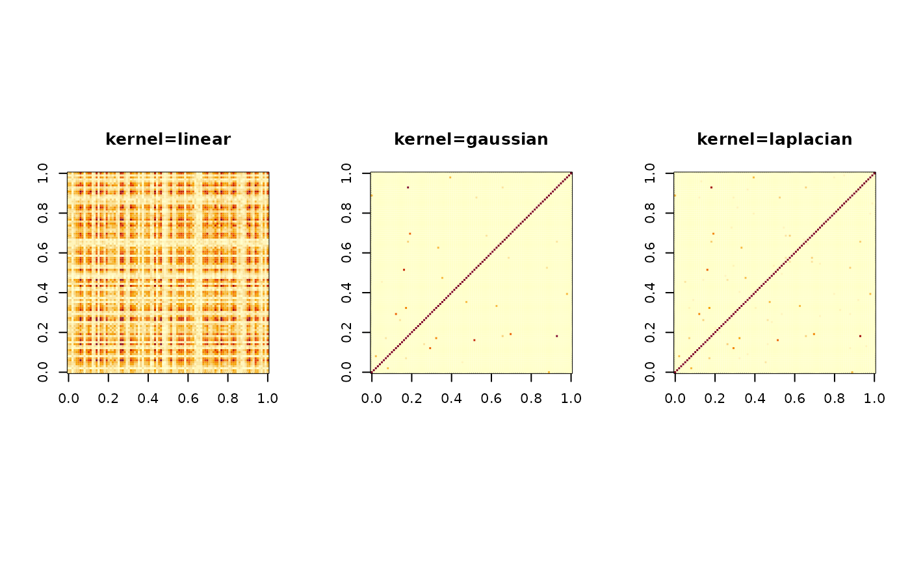

From the celebrated Mercer's Theorem, we know that for a mapping \(\phi\), there exists
a kernel function - or, symmetric bilinear form, \(K\) such that $$K(x,y) = <\phi(x),\phi(y)>$$ where \(<,>\) is
standard inner product. aux.kernelcov is a collection of 20 such positive definite kernel functions, as
well as centering of such kernel since covariance requires a mean to be subtracted and
a set of transformed values \(\phi(x_i),i=1,2,\dots,n\) are not centered after transformation.
Since some kernels require parameters - up to 2, its usage will be listed in arguments section.
aux.kernelcov(X, ktype)
| X | an \((n\times p)\) data matrix |
|---|---|
| ktype | a vector containing the type of kernel and parameters involved. Below the usage is consistent with description
|
a named list containing
a \((p\times p)\) kernelizd gram matrix.
a \((p\times p)\) centered version of K.
There are 20 kernels supported. Belows are the kernels when given two vectors \(x,y\), \(K(x,y)\)
\(=<x,y>+c\)
\(=(<x,y>+c)^d\)
\(=exp(-c\|x-y\|^2)\), \(c>0\)
\(=exp(-c\|x-y\|)\), \(c>0\)
\(=\sum_k exp(-c(x_k-y_k)^2)^d\), \(c>0,d\ge 1\)
\(=tanh(a<x,y>+b)\)
\(=1-(\|x-y\|^2)/(\|x-y\|^2+c)\)
\(=\sqrt{\|x-y\|^2 + c^2}\)
\(=1/(\|x-y\|^2+c^2)\)
\(=1/\sqrt{\|x-y\|^2+c^2}\)
\(= \frac{2}{\pi} arccos(-\frac{\|x-y\|}{c}) - \frac{2}{\pi} \frac{\|x-y\|}{c}\sqrt{1-(\|x-y\|/c)^2} \), \(c>0\)
\(= 1-1.5\frac{\|x-y\|}{c}+0.5(\|x-y\|/c)^3 \), \(c>0\)
\(=-\|x-y\|^d\), \(d\ge 1\)
\(=-\log (\|x-y\|^d+1)\)
\(= \prod_i ( 1+x_i y_i(1+min(x_i,y_i)) - \frac{x_i + y_i}{2} min(x_i,y_i)^2 + \frac{min(x_i,y_i)^3}{3} ) \)
\(=\frac{c^2}{c^2+\|x-y\|^2}\)
\(=\sum_i \frac{2x_i y_i}{x_i+y_i}\)
\(=\sum_i min(x_i,y_i)\)
\(=sum_i min( |x_i|^c,|y_i|^d )\)
\(=1/(1+\|x-y\|^d)\), \(d\ge 1\)
Hofmann, T., Scholkopf, B., and Smola, A.J. (2008) Kernel methods in machine learning. arXiv:math/0701907.
Kisung You
# \donttest{ ## generate a toy data set.seed(100) X = aux.gensamples(n=100) ## compute a few kernels Klin = aux.kernelcov(X, ktype=c("linear",0)) Kgau = aux.kernelcov(X, ktype=c("gaussian",1)) Klap = aux.kernelcov(X, ktype=c("laplacian",1)) ## visualize opar <- par(no.readonly=TRUE) par(mfrow=c(1,3), pty="s") image(Klin$K, main="kernel=linear") image(Kgau$K, main="kernel=gaussian") image(Klap$K, main="kernel=laplacian")